Captures sur téléphone, dans l'aperçu de l'app. Chaque cadre se fait défiler.
L'heure d'abord, puis le client. Une vente annulée a une étiquette rouge. « Retrouver un appareil » est un bouton en haut.
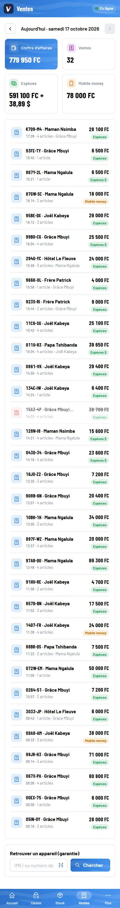
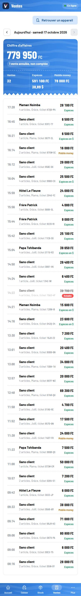
Le ticket zébré en haut. Plus de colonne € remplie de zéros : seulement les devises utilisées, comme dans menuiserie-factures.
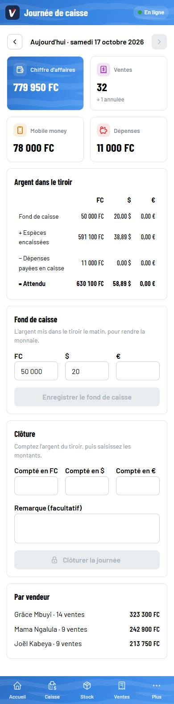
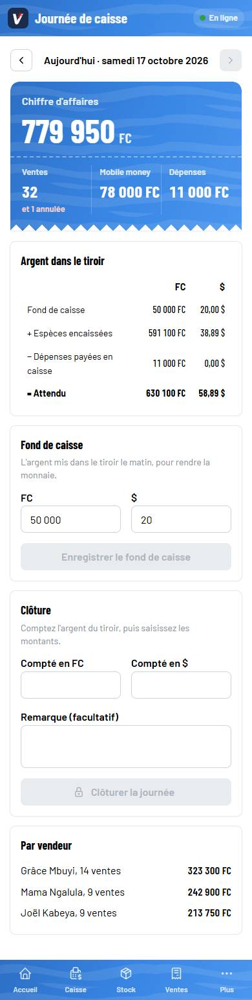
Des montants plutôt que des nombres de dépenses. Le nom n'est plus coupé : on touche une dépense pour l'annuler.
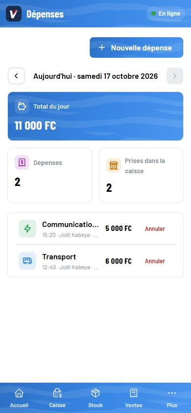
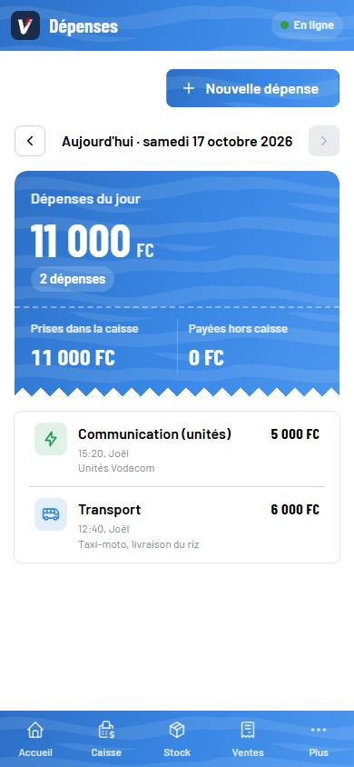
Jour, Semaine ou Mois tout en haut. « Bénéfice estimé » au lieu de « Marge brute ». Les six derniers mois passent en bas.
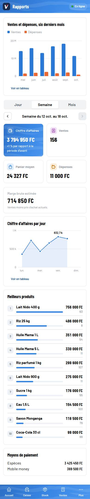
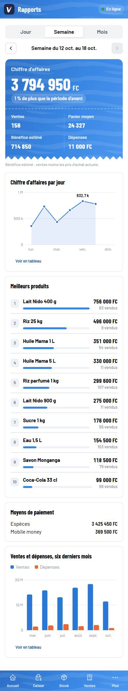
Le taux du jour en premier, avec l'heure de sa dernière mise à jour.
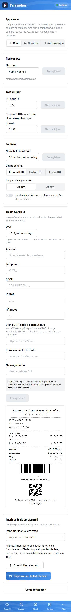
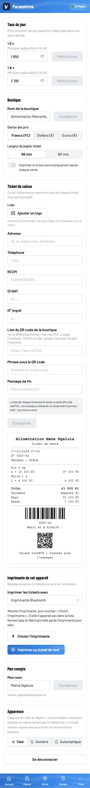
Sur téléphone, seulement le rayon sous le nom ; les codes restent sur ordinateur. « 5 restants » au lieu de « 5 RESTANTS ».
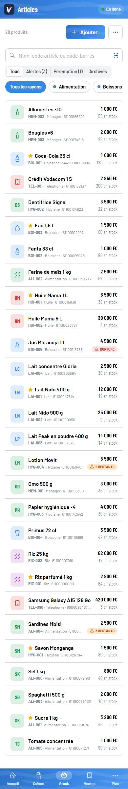
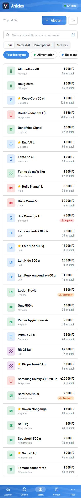